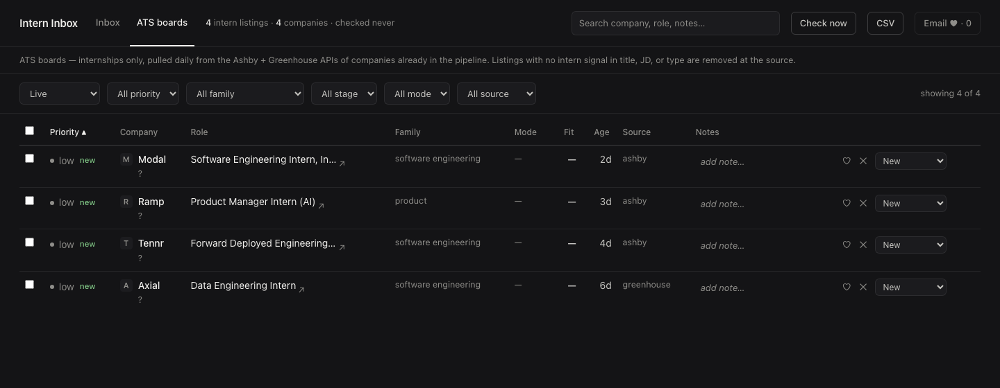

How it works
Three things happen once, then one thing happens daily.
-
Paste one command
It installs what is missing, downloads the project to
~/intern-inbox, and starts it. About a minute the first time, mostly downloading Python. Apart from uv — the Python tool it installs if you don't already have it — everything lands in that one folder.Already have Claude Code? The same paste opens the project there instead.
-
Answer 3 questions
Which roles you want, how big a company you will consider, and — optional — a Gmail app password so the app can read your job-alert emails. The size question is the one that does the work: tell it 50 people max and bigger companies never reach you.
Sizes are confirmed as companies get enriched, so a company nobody has sized yet is never dropped on a guess. Skip the email step and everything else still works.
-
Triage daily
Open the app, press Check now, and go down the new rows: heart the ones worth applying to, X the ones that are not, move a row to Applied once you have applied. That is the entire interface.
Job alerts take up to a day to start arriving. An empty email column on day one is expected, not a broken install — the company boards fill the list meanwhile.
What it pulls
Four sources, all of them narrowed to NYC and NJ internships before you see anything.
- Ashby + Greenhouse boards
- The shared list of NYC company job boards, swept once a day.
- Your job-alert emails
- LinkedIn, Built In, and Wellfound alerts, read out of your Gmail with an app password.
- SimplifyJobs GitHub lists
- The big public internship lists, checked for anything in range.
- Indeed + Google (optional)
- Broader board search through JobSpy. Off by default; one command turns it on.
Job descriptions are saved alongside each listing, so search actually works and most rows need no second tab.

Private by design
Your data stays on your machine. The database is a SQLite file in the project folder, the app runs on localhost, and there are no accounts and no analytics — there is nowhere to sign in because there is no server to sign in to.
Your resume, profile, config, and pipeline never leave the laptop. Resume files are
gitignored, so git add -A cannot stage them even by accident.
To be precise about what does leave: the feeds call the public job-board APIs to fetch listings, and board requests carry the contact email you gave at setup in an honest User-Agent so employers can reach you about traffic. Company logos load from Google's favicon service and the office map loads OpenStreetMap tiles — both ordinary page requests. Your resume, profile, and pipeline never leave the laptop.
Goes further with Claude Code
Recommended, not required. The install, the setup questions, the feeds, and the inbox
all run without it. What it adds is depth: open the intern-inbox folder in
Claude Code and five commands become available.
/setup— reads your actual resume and rewrites your keywords and rankings from it, which goes deeper than the starter bundles the wizard picks from checkboxes./opportunity-scan— a full sourcing sweep plus company enrichment, which is what turns the priority column into real tiers./skills-gap— every stored job description read against your profile: what the market wants, where you fall short, per-role fit briefs./add-opportunity— paste any posting, URL, or alert email to file it./pipeline-review— triage by talking: "kill 12", "applied to Ramp".
Without Claude Code you get the same inbox, sorted by the answers you gave the wizard.
Questions
Do I need Claude Code?
No. The setup wizard, the feeds, and the inbox all run on their own. Claude Code adds depth — a resume-derived profile, scans, gap reports — not access.
Do I need to know how to code?
No. You paste one line into a terminal once and answer three questions in a browser. After that it
is clicking: check, heart, kill, applied. The one command you will retype is git pull,
every week or so, to pick up company boards other students added.
Does it work on Windows?
Yes — the PowerShell script does the same work as the Mac one. Here is the honest part: it has been read line by line but never run on a real Windows machine.
First Windows tester welcome. If it stops early, open an issue with whatever it printed and it gets fixed.
What about big companies?
Hidden by default. Setup ships with a checkbox that hides big-name companies — Google, Goldman, Meta, and about fifty more — and you uncheck it if you want them. Separately, you set the size cap: up to ~50 people, ~100, ~500, any size, or a number you type.
Only companies confirmed at or over your cap get dropped. A company nobody has sized yet stays in the list rather than disappearing on a guess.
Who made this?
A student on the NOC New York program, for the cohort doing the same hunt. It is MIT-licensed and the source is on GitHub.
Found a company hiring on Ashby or Greenhouse that is not in the list? Add its board slug and open a
pull request — everyone else picks it up on the next git pull.